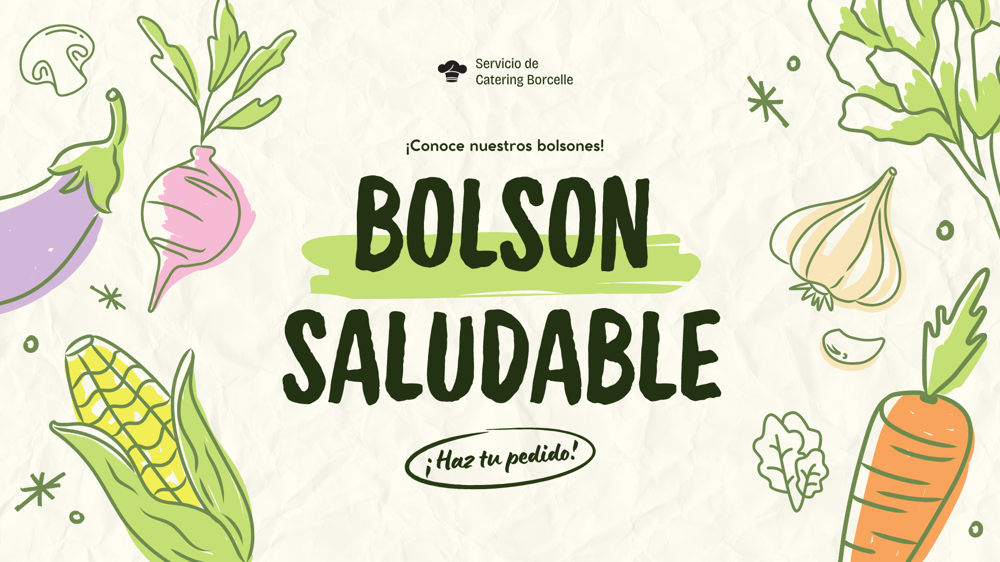
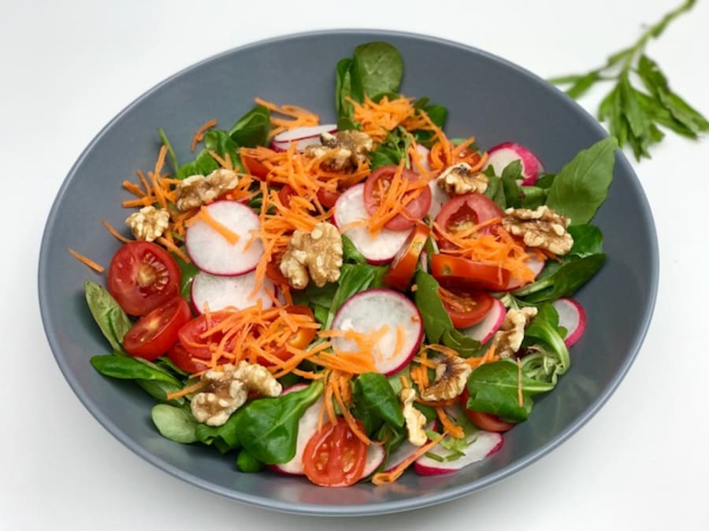
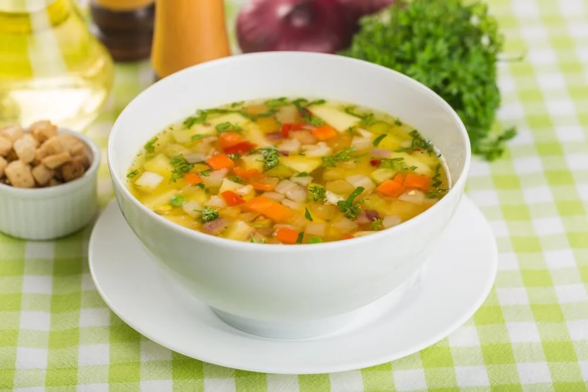
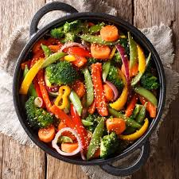

Disfruta de una ensalada fresca utilizando nuestras verduras. Mezcla albahaca, tomate y zanahoria.
Para conservar la frescura, guarda las verduras en un lugar fresco y seco.

Prepara una deliciosa sopa utilizando nuestras verduras. Cocina a fuego lento con caldo y especias.
Las verduras pueden almacenarse en el refrigerador hasta una semana. ¡No las dejes olvidadas!

Un salteado rápido y fácil. Usa brócoli, pimientos y cebolla. Agrega salsa de soja al gusto.
Utiliza un sartén caliente para mantener las verduras crujientes.